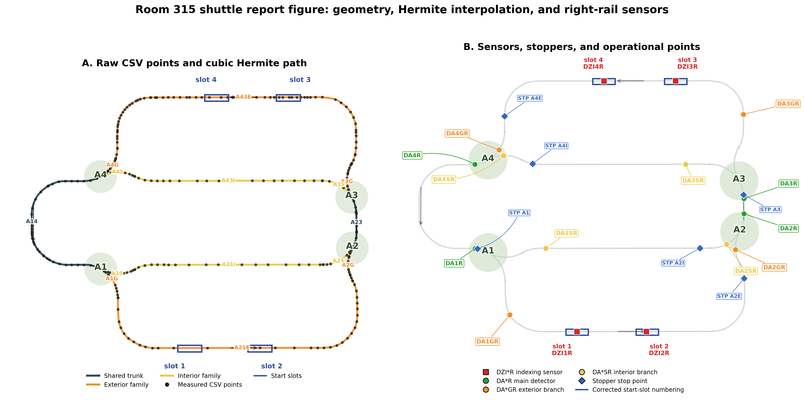
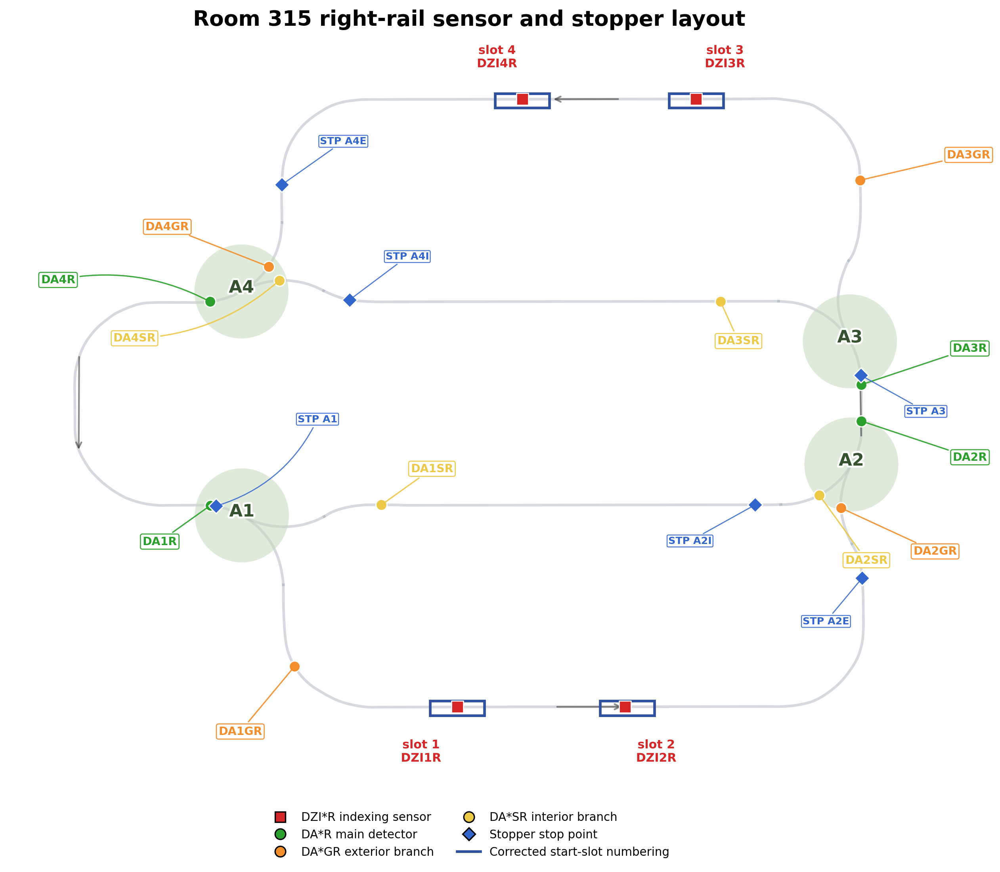

The Room 315 shuttle node now publishes a consistent operator interface: the route command topic, the state topic, the stopper workflow topic, and the position detector topic all expose the same naming scheme used in the final diagrams. This reduces confusion during Gazebo testing, topic monitoring, and documentation review.
A second outcome is better runtime robustness. The operator can recover
from a bad route selection by sending RESET, can remove a
shuttle model completely by sending REMOVE, and can add a new
shuttle again through the runtime add topic. This removes the need to stop
and relaunch Gazebo during iterative tests.

Two sensing layers are now available. The first layer is the
/room_315/sensors/switch_approach topic, which reports when a
shuttle is approaching a stopper before a switch. The second layer is the
/room_315/sensors/position topic, which reports virtual
position detectors placed around indexing zones and switch branches on the
right rail.

| Sensor | Location | Function |
|---|---|---|
DZI2R |
Slot 1 indexing position | Confirms that the shuttle is located at the first indexing/start position on the right rail. |
DZI1R |
Slot 2 indexing position | Confirms that the shuttle is located at the second indexing/start position. |
DZI4R |
Slot 3 indexing position | Confirms shuttle presence at the third indexing/start position. |
DZI3R |
Slot 4 indexing position | Confirms shuttle presence at the fourth indexing/start position. |
| Sensor group | Function |
|---|---|
DA1R, DA1GR, DA1SR |
DA1R detects the shuttle on the common track near switch A1. DA1GR detects the shuttle on the exterior branch of A1. DA1SR detects the shuttle on the interior branch of A1. |
DA2R, DA2GR, DA2SR |
DA2R detects the shuttle on the common track near switch A2. DA2GR detects the shuttle on the exterior branch of A2. DA2SR detects the shuttle on the interior branch of A2. |
DA3R, DA3GR, DA3SR |
DA3R detects the shuttle on the common track near switch A3. DA3GR detects the shuttle on the exterior branch of A3. DA3SR detects the shuttle on the interior branch of A3. |
DA4R, DA4GR, DA4SR |
DA4R detects the shuttle on the common track near switch A4. DA4GR detects the shuttle on the exterior branch of A4. DA4SR detects the shuttle on the interior branch of A4. |
In addition, the approach sensor stream reports pre-switch handling
information such as before_switch, stopper,
entity_name, segment, and
distance_m. This supports the manual workflow:
sensor detection, stopper closure, switch update, and shuttle release.
| Topic / command | Example | Function |
|---|---|---|
/room_315/switch_states |
A1=EXTERIOR, A1=INTERIOR, A1=E, A1=I |
Sets the commanded route at a switch using the current operator naming. The same topic also updates the Gazebo switch visuals. |
/room_315/switch_states |
ALL=EXTERIOR, ALL=INTERIOR |
Applies one route selection to all switches at once for fast route testing. |
/room_315/stopper_states |
A1=1, A1=0, ALL=1, ALL=0 |
Closes or opens a stopper independently from the switch state to perform safe manual switch handling. |
/room_315/shuttle/control_cmd |
room315_shuttle_1=OFF, ON |
Stops or resumes the kinematic motion of one shuttle while keeping the model available in the simulation. |
/room_315/shuttle/control_cmd |
room315_shuttle_1=RESET |
Returns a shuttle to its configured start slot and recovers it from invalid routing states without restarting Gazebo. |
/room_315/shuttle/control_cmd |
room315_shuttle_1=REMOVE |
Deletes the shuttle model from Gazebo and unregisters it from the running node. |
/room_315/shuttle/add_cmd |
entity=room315_shuttle_1 slot=1 speed=0.2 |
Adds a shuttle dynamically at runtime on a selected slot, with an optional custom speed and entity name. |
/room_315/sensors/position |
ros2 topic echo /room_315/sensors/position |
Displays the virtual indexing and switch-area detector events for monitoring and validation. |
/room_315/sensors/switch_approach |
ros2 topic echo /room_315/sensors/switch_approach |
Displays approach events before switches, including the associated stopper and the remaining distance to the stop point. |
/room_315/shuttle/state |
ros2 topic echo /room_315/shuttle/state | grep current_segment |
Shows the current user-facing segment label, together with shuttle state, slot, and motion information. |